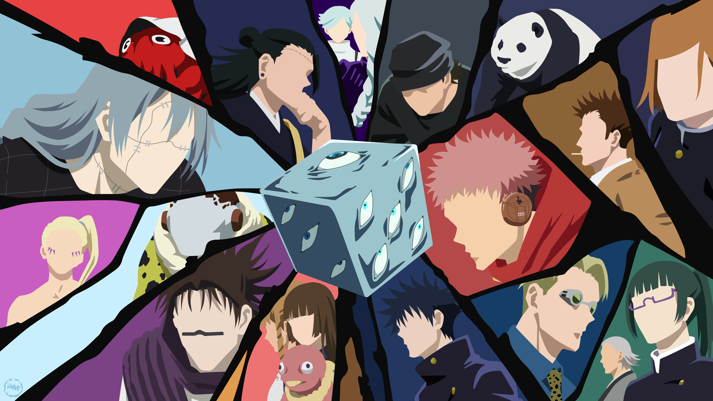
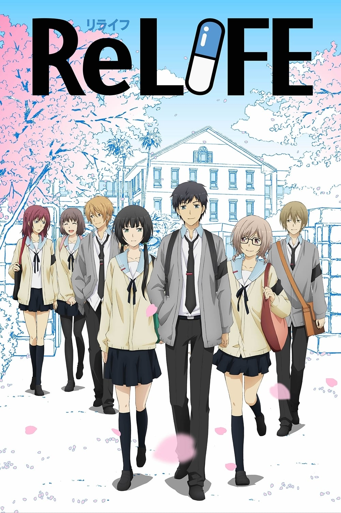

One Piece
One Piece (ワンピース Wan Pīsu?) é uma série de mangá escrita e ilustrada por Eiichiro Oda. Os capítulos têm sido serializados na revista Weekly Shōnen Jump desde julho de 1997, com os capítulos compilados e publicados em 108 volumes tankōbon pela editora Shueisha até abril de 2024. One Piece conta as aventuras de Monkey D. Luffy, um jovem cujo corpo ganhou as propriedades de borracha após ter comido um fruto do diabo acidentalmente. Com sua tripulação, os Piratas do Chapéu de Palha, Luffy explora a Grand Line em busca do tesouro mais procurado do mundo, o "O Grande Tesouro Entrelaçador/ Símbolo Único" - "One Piece"/ "ひとつなぎの大秘宝" - "ワンピース" (Hitotsunagi no Daihihou - One Piece), a fim de se tornar o próximo Rei dos Piratas. One Piece atingiu a marca de mil capítulos publicados na Weekly Shonen Jump em janeiro de 2021, se tornando um dos raros mangás a ultrapassar tal marca.

Jujutsu Kaisen
Em Jujutsu Kaisen, a vida de um adolescente é virada de cabeça para baixo após entrar em contato com um talismã amaldiçoado. No conceituado anime, o adolescente Yuuji Itadori participa de um clube de ocultismo e acaba se envolvendo com um item perigoso, um dedo amaldiçoado. Para proteger seus colegas de um ataque das Maldições, ele engole o dedo e se torna anfitirão da Maldição. Ao invés de sofrer uma sentença de morte imediata, seu professor consegue levá-lo ao Colégio Técnico Metropolitano de Tóquio e elaborar um plano para que ele consuma todos os dedos para se tornar uma Maldição e, enfim, acabar com ela.

ReLIFE
Arata Kaizaki, um homem de 27 anos considerado um fracasso pelas pessoas ao seu redor, vê sua vida mudar radicalmente quando é apresentado a uma oportunidade inusitada através de Ryou Yoake, membro do Instituto ReLife. Após ingerir uma pílula misteriosa, ele acorda com a aparência de um adolescente de 17 anos e se vê obrigado a reiniciar sua vida escolar como um transferido. No entanto, o retorno à adolescência não é tão simples quanto ele imaginava; Arata enfrenta dificuldades acadêmicas, novas dinâmicas sociais e as complicações de interagir com colegas de classe que mal conhecem sua verdadeira identidade. Enquanto tenta se adaptar a esse novo mundo, ele descobre tanto sobre si mesmo quanto sobre os problemas enfrentados por seus companheiros, tecendo uma jornada de autoconhecimento e redenção.

Spy X Family
Spy × Family (japonês: スパイファミリー Hepburn: Supai Famirī?, estilizado como SPY×FAMILY e pronunciado "Spy Family") é uma série de mangá shōnen japonesa escrita e ilustrada por Tatsuya Endo. A história segue a vida de Twilight, um espião que precisa "formar uma família" de forma repentina para executar uma missão. A reviravolta se dá quando percebemos que a garota que ele adota como filha tem poderes e é capaz de ler mentes e a mulher com quem ele concorda em se casar para formar um falso casamento é uma espiã profissional. E a partir daí, acompanhamos essa história de comédia com essa família um tanto quanto diferente vivendo sem saber os segredos uns dos outros.